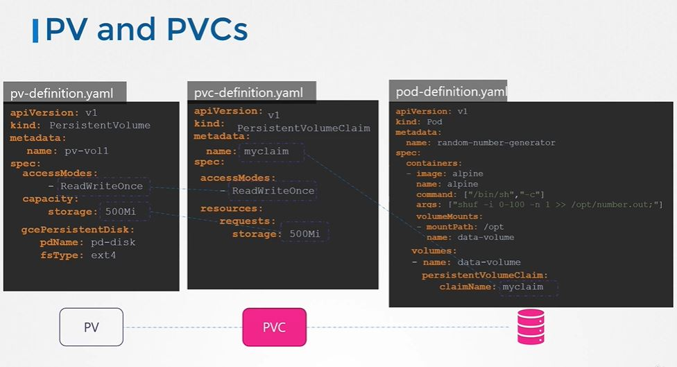
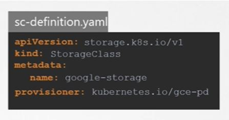

Details: Persistent Volume and Persistent Volume Claim. Example of pod storage addition.


Storage Class:
So we learnt so far below format in snip, create pv >> create pvc >> attach/use in pod.
So here we are using Google Cloud Disk.
So we need to first create a disk then use it in Persistent Volume.

So every time we have to create a disk in a provider or provisioners like GCP and AWS, and the need to create PV that's called STATIC PROVISIONING of volumes.
It would be nice if volume got provisioned automatically when the application needed it. And that's where storage classes and this is called DYNAMIC PROVISIONING of volumes.
In Dynamic provisioning, providers or provisioners like GCP and AWS can provide the storage and attach to the pod whenever the persistent volume claim is made.
That is done by creating a Storage Class Object like below:
So now it will look like below and here Persistent Volume will be created but it will be done automatically.